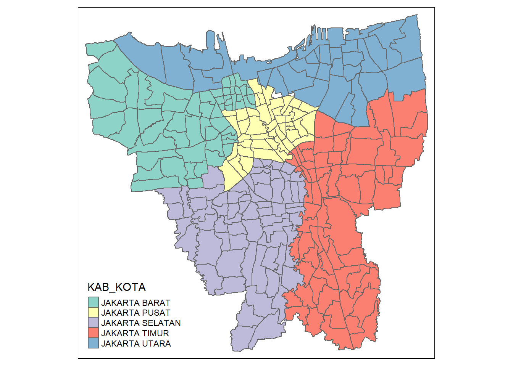
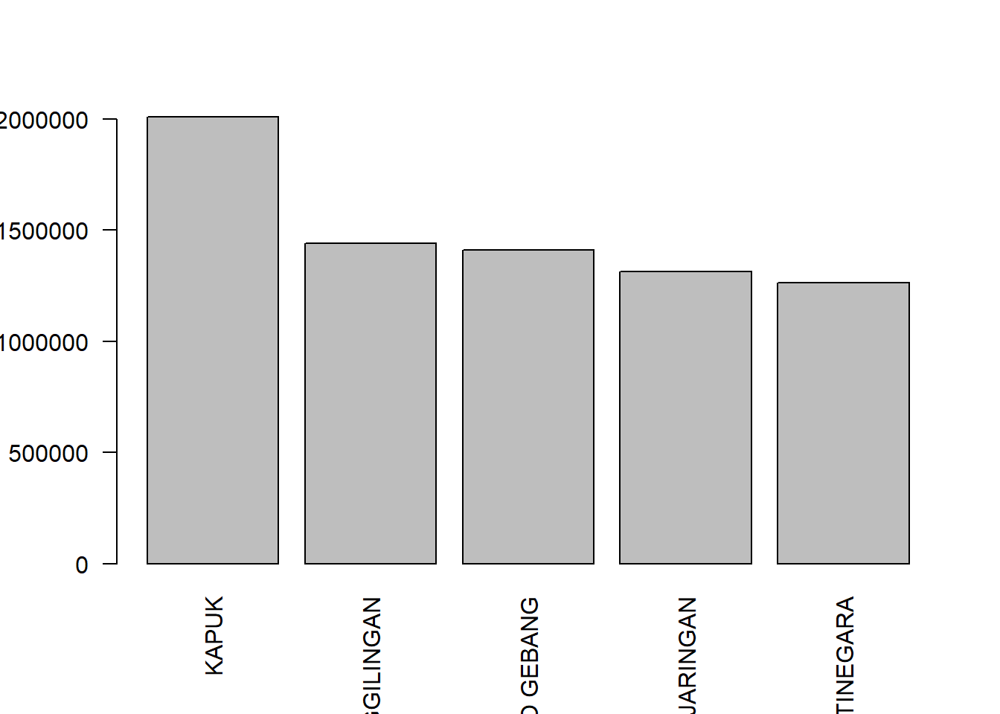
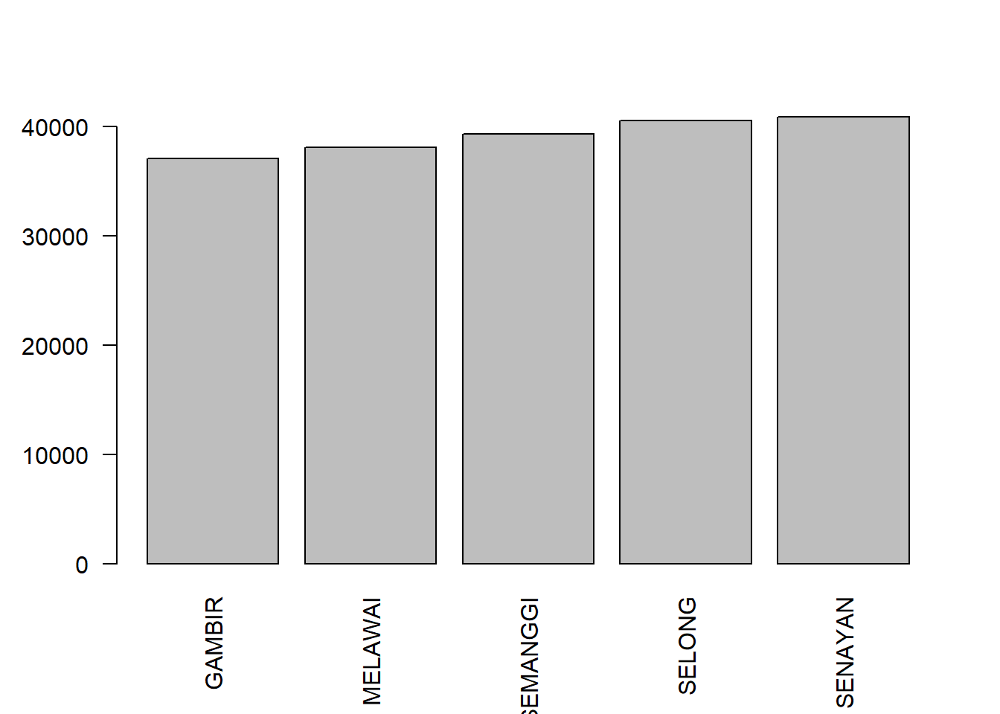

pacman::p_load(dplyr, sf, spdep, tmap, tidyverse, readxl, ggplot2,moments)Take Home Ex 2
Questions
“The question is where are the sub-districts with relatively higher number of vaccination rate and how they changed over time.”
Load R packages
Getting started
At first, I have loaded the beginning month of the data as shown below:

However, July 2021 has only 21 variables. I decided to to further research. Based on research, there was a change in the category of vaccination recipient in DKI Jakarta starting from 4 July 2021 which they have mentioned on the website itself here. Hence, I have decided to change the data to end of the month for easier analysis.
Import data and preparation
jul<- read_excel("data/aspatial/Juli 2021.xlsx")
aug21<- read_excel("data/aspatial/Agustus 2021.xlsx")
sep21<- read_excel("data/aspatial/September 2021.xlsx")
oct21<- read_excel("data/aspatial/Oktober 2021.xlsx")
nov21<- read_excel("data/aspatial/November 2021.xlsx")
dec21<- read_excel("data/aspatial/Desember 2021.xlsx")
jan22<- read_excel("data/aspatial/Januari 2022.xlsx")
feb22<- read_excel("data/aspatial/Februari 2022.xlsx")
mar22<- read_excel("data/aspatial/Maret 2022.xlsx")
apr22<- read_excel("data/aspatial/April 2022.xlsx")
may22<- read_excel("data/aspatial/Mei 2022.xlsx")
jun22<- read_excel("data/aspatial/Juni 2022.xlsx")
After analyzing the dataset, there are different number of variables.
- Jul 2021 to Feb 2022: 27 variables
- March 2022 to June 2022: 34 variables
The additional columns include categories such as TAHAPAN and REMAJA which means General Public and Children Age 12-17 respectively and also introduces the 3rd dose for all the categories.
In the section below, I decided to take total dose 1 to dose 3 value for all categories and compare them for exploratory purposes.
Columns to keep:
KODE KELURAHAN = SUB DISTRICT CODE
WILATAH KOTA = NSEW REGION
KECAMATAN = DISTRICT
KELURAHAN = SUB DISTRICT
SASARAN = TARGETED VACCINE
BELUM VAKSIN = NOT YET VACCINATED
JUMLAH DOSIS 1 = TOTAL AMOUNT OF DOSE 1 GIVEN
JUMLAH DOSIS 2 = TOTAL AMOUNT OF DOSE 2 GIVEN
JUMLAH DOSIS 3 = TOTAL AMOUNT OF DOSE 3 GIVEN
TOTAL VAKSIN DIBERIKAN = TOTAL VACCINE GIVEN
Change column
colnames(jul)[6] ="NotYetV_jul21"
colnames(jul)[7] ="D1_jul21"
colnames(jul)[8] ="D2_jul21"
colnames(jul)[9] ="TotalV_jul21"
jul21<-jul[-c(1:3,5,10:27)]
colnames(aug21)[6] ="NotYetV_aug21"
colnames(aug21)[7] ="D1_aug21"
colnames(aug21)[8] ="D2_aug21"
colnames(aug21)[9] ="TotalV_aug21"
aug21<-aug21[-c(1:3,5,10:27)]
colnames(sep21)[6] ="NotYetV_sep21"
colnames(sep21)[7] ="D1_sep21"
colnames(sep21)[8] ="D2_sep21"
colnames(sep21)[9] ="TotalV_sep21"
sep21<- sep21[-c(1:3,5,10:27)]
colnames(oct21)[6] ="NotYetV_oct21"
colnames(oct21)[7] ="D1_oct21"
colnames(oct21)[8] ="D2_oct21"
colnames(oct21)[9] ="TotalV_oct21"
oct21<-oct21[-c(1:3,5,10:27)]
colnames(nov21)[6] ="NotYetV_nov21"
colnames(nov21)[7] ="D1_nov21"
colnames(nov21)[8] ="D2_nov21"
colnames(nov21)[9] ="TotalV_nov21"
nov21<-nov21[-c(1:3,5,10:27)]
colnames(dec21)[6] ="NotYetV_dec21"
colnames(dec21)[7] ="D1_dec21"
colnames(dec21)[8] ="D2_dec21"
colnames(dec21)[9] ="TotalV_dec21"
dec21<-dec21[-c(1:3,5,10:27)]
colnames(jan22)[6] ="NotYetV_jan21"
colnames(jan22)[7] ="D1_jan22"
colnames(jan22)[8] ="D2_jan22"
colnames(jan22)[9] ="TotalV_jan22"
jan22<-jan22[-c(1:3,5,10:27)]
colnames(feb22)[6] ="NotYetV_jan21"
colnames(feb22)[7] ="D1_feb22"
colnames(feb22)[8] ="D2_feb22"
colnames(feb22)[9] ="TotalV_feb22"
feb22<-feb22[-c(1:3,5,10:27)]
colnames(mar22)[6] ="NotYetV_mar21"
colnames(mar22)[7] ="D1_mar22"
colnames(mar22)[8] ="D2_mar22"
colnames(mar22)[9] ="D3_mar22"
colnames(mar22)[10] ="TotalV_mar22"
mar22<-mar22[-c(1:3,5,11:34)]
colnames(apr22)[6] ="NotYetV_apr21"
colnames(apr22)[7] ="D1_apr22"
colnames(apr22)[8] ="D2_apr22"
colnames(apr22)[9] ="D3_apr22"
colnames(apr22)[10] ="TotalV_apr22"
apr22<-apr22[-c(1:3,5,11:34)]
colnames(may22)[6] ="NotYetV_may21"
colnames(may22)[7] ="D1_may22"
colnames(may22)[8] ="D2_may22"
colnames(may22)[9] ="D3_may22"
colnames(may22)[10] ="TotalV_may22"
may22<-may22[-c(1:3,5,11:34)]
colnames(jun22)[6] ="NotYetV_jun21"
colnames(jun22)[7] ="D1_jun22"
colnames(jun22)[8] ="D2_jun22"
colnames(jun22)[9] ="D3_jun22"
colnames(jun22)[10] ="TotalV_jun22"
jun22<-jun22[-c(1:3,5,11:34)]For column 1 to 5, It shows a constant rows names across all the months. Furthermore, I will keep column 6 to 9 for every month as it has done a rowsum across dose 1 and dose 2 for all the categories for us. Take note from march onwards there is dose 3, thus we need to change range from 9 to 10.
# we will repeat this code for all the months but remember we have to change the month name
FY21_22Vaccine <-jul[c(1:9)]
FY21_22Vaccine<- left_join(FY21_22Vaccine, aug21, by="KELURAHAN")
FY21_22Vaccine<- left_join(FY21_22Vaccine, sep21, by="KELURAHAN")
FY21_22Vaccine<- left_join(FY21_22Vaccine, oct21, by="KELURAHAN")
FY21_22Vaccine<- left_join(FY21_22Vaccine, nov21, by="KELURAHAN")
FY21_22Vaccine<- left_join(FY21_22Vaccine, dec21, by="KELURAHAN")
FY21_22Vaccine<- left_join(FY21_22Vaccine, jan22, by="KELURAHAN")
FY21_22Vaccine<- left_join(FY21_22Vaccine, feb22, by="KELURAHAN")
FY21_22Vaccine<- left_join(FY21_22Vaccine, mar22, by="KELURAHAN")
FY21_22Vaccine<- left_join(FY21_22Vaccine, apr22, by="KELURAHAN")
FY21_22Vaccine<- left_join(FY21_22Vaccine, may22, by="KELURAHAN")
FY21_22Vaccine<- left_join(FY21_22Vaccine, jun22, by="KELURAHAN")We will be using FY21_22Vaccine data frame from now on.
After tidying data for aspatial, lets import geospatial data. The projected coordinate system is:

jakarta <- st_read(dsn = "data/geospatial",
layer = "BATAS_DESA_DESEMBER_2019_DUKCAPIL_DKI_JAKARTA") %>%
st_transform(crs = 23845)Reading layer `BATAS_DESA_DESEMBER_2019_DUKCAPIL_DKI_JAKARTA' from data source
`C:\yifei-alpaca\IS415-GAA\Take-home_Ex\Take-home_Ex02\data\geospatial'
using driver `ESRI Shapefile'
Simple feature collection with 269 features and 161 fields
Geometry type: MULTIPOLYGON
Dimension: XY
Bounding box: xmin: 106.3831 ymin: -6.370815 xmax: 106.9728 ymax: -5.184322
Geodetic CRS: WGS 84jakarta <- jakarta[c(1:9)]Columns to keep:
KODE DESA = SUB DISTRICT CODE
DESA = SUB DISTRICT
KODE = CODE
PROVINISI = PROVINCE
KAB KOTA= NSEW REGION
KECAMATAN = DISTRICT
DESA_KELUR = SUB DISTRICT (can be removed same value as DESA)
JUMLAH_PEN = TOTAL POPULATION
The jakarta data frame contains population number on a district level. We will do a basic EDA to understand the data more.
Exploratory Data Analysis (EDA)
Let’s plot the population map! And look there are regions that is outside of Jakarta, below we will be excluding them.
qtm(jakarta)
As mentioned in the requirement, we should exclude all the outer islands from the DKI Jakarta sf data frame. we can check based on regions, if its not in Jakarta, we should remove them.
unique(jakarta$KAB_KOTA)[1] "JAKARTA BARAT" "JAKARTA PUSAT" "KEPULAUAN SERIBU" "JAKARTA UTARA"
[5] "JAKARTA TIMUR" "JAKARTA SELATAN" NA In the above result, KEPULAUAN SERIBU is the Thousand Islands and is a chain of islands to the north of Jakarta’s coast which is out of our analysis interest.
jakarta<- filter(jakarta, KAB_KOTA != "KEPULAUAN SERIBU")Plot the latest data frame
qtm(jakarta)Joining the attribute data and geospatial data
Before we can perform georelational join, one extra step is required to check which column can be join together. After looking at both dataset, we can join by KODE KELURAHAN in FY21_22Vaccine to CODE_DESA in jakarta dataset.
jakarta_vaccine <- left_join(jakarta, FY21_22Vaccine,
by = c("KODE_DESA" = "KODE KELURAHAN"))Convert to sf objects
jakarta_vaccine <- st_as_sf(jakarta_vaccine)Choropleth Mapping Geospatial Data using tmap
tmap_mode("plot")
qtm(jakarta_vaccine,
fill = "KAB_KOTA")
BARAT = WEST
PUSAT = CENTER
SELATANT = SOUTH
TIMUR = EAST
UTARA = NORTH
Population choropleth map
tmap_mode("plot")
qtm(jakarta_vaccine,
fill = "JUMLAH_PEN")
As we can see from the graph above, the west side of Jakarta is more dense as compared to the rest of the region. This shows that there are more population in the west area followed by east area.
Lets visualize our combined data in terms of total dose 1,2 and 3. a basic goal of a classification scheme is to group together similar observations and split apart observations that are substantially different.
Based on the skewness below, we can see that all more positively skewed towards the right which means it is not appropriate to use equal methods.
skewness(jakarta_vaccine$TotalV_jul21)[1] 0.8814528skewness(jakarta_vaccine$TotalV_aug21)[1] 1.005361skewness(jakarta_vaccine$TotalV_sep21)[1] 1.045357skewness(jakarta_vaccine$TotalV_oct21)[1] 1.041591skewness(jakarta_vaccine$TotalV_nov21)[1] 1.047173skewness(jakarta_vaccine$TotalV_dec21)[1] 1.050825skewness(jakarta_vaccine$TotalV_jan22)[1] 1.050915skewness(jakarta_vaccine$TotalV_feb22)[1] 1.053374skewness(jakarta_vaccine$TotalV_mar22)[1] 1.033162skewness(jakarta_vaccine$TotalV_apr22)[1] 1.0492skewness(jakarta_vaccine$TotalV_may22)[1] 1.044524skewness(jakarta_vaccine$TotalV_jun22)[1] 1.043669In the following code chunck, I will be using Natural Breaks (Jenks) method and will be classifying into 6 classes for my analysis. Natural Breaks are good for mapping values that are not evenly distributed on a histogram which is is suitable in our case.
The below code is a function to help us iterate multiple times, limiting the amount of large code.
jenks_plot <- function(df, varname) {
tm_shape(jakarta_vaccine) +
tm_polygons() +
tm_shape(df) +
tm_fill(varname,
n= 6,
style = "jenks",
title = "Number of people vaccinated") +
tm_layout(main.title = varname,
main.title.position = "center",
main.title.size = 1.2,
legend.height = 0.45,
legend.width = 0.35,
frame = TRUE) +
tm_borders(alpha = 0.5)
}Lets visualize the data in months:
tmap_mode("plot")
tmap_arrange(jenks_plot(jakarta_vaccine, "D1_jul21"),
jenks_plot(jakarta_vaccine, "D2_jul21"),
jenks_plot(jakarta_vaccine, "D1_aug21"),
jenks_plot(jakarta_vaccine, "D2_aug21"))
tmap_arrange(jenks_plot(jakarta_vaccine, "D1_sep21"),
jenks_plot(jakarta_vaccine, "D2_sep21"),
jenks_plot(jakarta_vaccine, "D1_oct21"),
jenks_plot(jakarta_vaccine, "D2_oct21"))
tmap_arrange(jenks_plot(jakarta_vaccine, "D1_nov21"),
jenks_plot(jakarta_vaccine, "D2_nov21"),
jenks_plot(jakarta_vaccine, "D1_dec21"),
jenks_plot(jakarta_vaccine, "D2_dec21"))
tmap_arrange(jenks_plot(jakarta_vaccine, "D1_jan22"),
jenks_plot(jakarta_vaccine, "D2_jan22"),
jenks_plot(jakarta_vaccine, "D1_feb22"),
jenks_plot(jakarta_vaccine, "D2_feb22"))
do a bar chart to analysis maybe can pie chart also (later)
do population analysis - see which has the most populated district (DONE)
combine points and polygon for dose 1,2,3 compare them based on district and also by month (doing)
see the trend by month ( maybe can do interactive map)